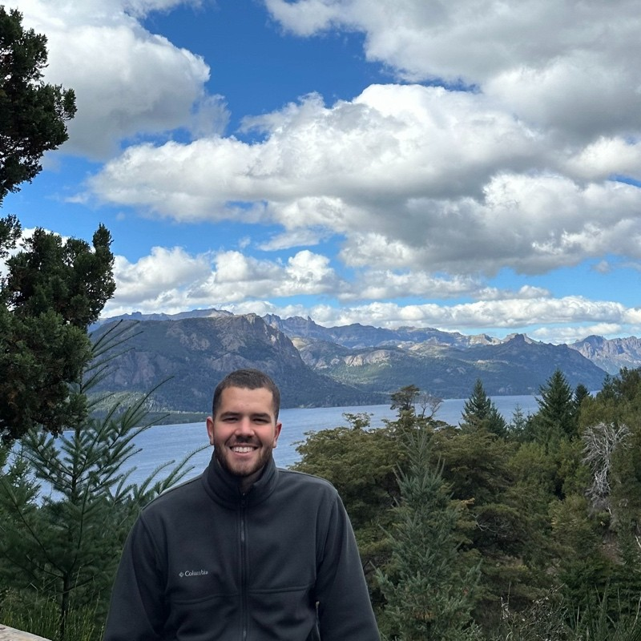

Luca Lioni
Data Engineer enfocado en la migración, integración y visualización de los datos.
Desde mis años en SEO siempre me importo convertir el dato en informacion y poder hacer toda de decisiones gracias a esto.
Por este motivo empece en mi trabajo me enfoco en los datos de nuestros clientes para que estos pasen a ser claves en la toma de decisiones.